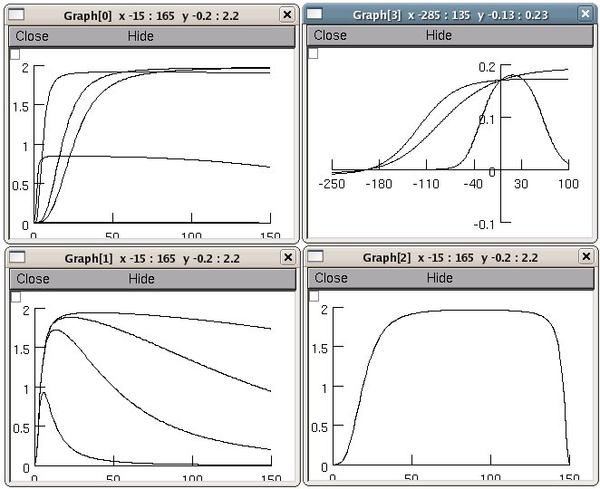

This is the README for a model associated with the paper: Chapman JB, Johnson EA, Kootsey JM. (1983) Electrical and Biochemical Properties of an Enzyme Model of the Sodium Pump J. Membrane Biol. 74, 139-153 This implementation was created by Michael Hines. Generates figures 2-12. Fig 9 unidirectional fluxes were computed using equations 13,14 from Feher JJ, Biophys J. 1984 June; 45(6): 1125b http://www.pubmedcentral.nih.gov/articlerender.fcgi?artid=1434995 The lines are not labeled but they are easy to compare with the figures in the paper. The mod file can be simplified by removing the calculation and storage of the individual forward and reverse fluxes, i.e. rf[] and rb[]. For use in a more complex model, this mod file should be modified with USEION statements to use na and k ion concentrations and generate ina and ik. The dynamic directory shows an example of this by extending the Chapman et al simulations using nai, ki, and atp as states, which, in the presence of leak channels for na, k and non-specific ions, produce reasonable na and k gradients. See dynamic/README. Usage: Simply auto-launch from ModelDB or compile the mod files under MSWIN: ----- Use mknrndll (change directory to the one expanded from the archive and click "make nrnmech.dll"). Then run by double clicking the mosinit.hoc file in a windows explorer. MAC OS X -------- Drag and drop the expanded folder from this archive onto the mknrndll icon. Drag and drop the mosinit.hoc file onto the nrngui icon. Linux/Unix ---------- Change directory to the expanded folder and type these two lines: nrnivmodl nrngui mosinit.hoc Once the simulation is started ------------------------------ Simply press the buttons to reproduce figures. For example pressing the "Figure 2-3" button leads to: 